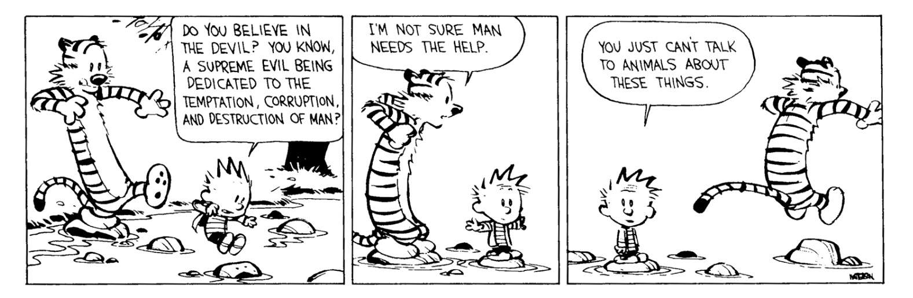

Wissenschaftlicher Mitarbeiter
Bergische Universität Wuppertal
F13.05
Gaußstraße 20, Wuppertal
GERMANY
Email: last name, alum, mit, edu
I am currently a postdoc at Bergische Universität Wuppertal under the supervision of Kay Rülling. Before that, I was a limited term assistant professor at UGA. Before that, I was an NSF postdoctoral fellow under the supervision of Hélène Esnault at FU Berlin. Earlier still I was a graduate student in the Mathematics Department at Columbia University, where my advisor was Johan de Jong. Here is a CV.
Over the last few years, I have mostly thought about l-adic local systems and overconvergent F-isocrystals on smooth varieties over finite fields. I am also especially interested in p-divisible groups on complete varieties over finite fields and central leaves on Shimura varieties.
These interests essentially arose from my PhD Thesis. Motivated by results of Mochizuki, I tried to "characterize" Shimura curves over a finite field using purely group theoretic data: the notion of an étale correspondence without a core. These exhibit many formal similarities with Hecke correspondences of Shimura curves: for instance, given a correspondence without a core, one can construct an infinite graph with a large group of "algebraic" automorphisms. In the case of a Hecke correspondence of Shimura curves, this specializes to the action of PSL_2(Q_p) on it's building. Relatedly, given a correspondence without a core, one may construct an infinite tower of covers; these specialize to adding progressively higher (full) level structure in the familiar case of Hecke correspondences of Shimura/modular curves.
A more elaborate group-theoretic hypothesis: one may make assumptions about the Galois groups of this infinite tower of curves. By assuming that certain Galois groups are related to linear groups over local fields, one is led to the following question. Let X←Z→X be an étale correspondence without a core and suppose there is an SL_2(Q_l) local system on X such that the two pullbacks to Z are isomorphic as local systems. Then is the whole package "related to" a Hecke correspondence of Shimura curves? The example of modular curves with Igusa level structures show that the phrase "related to" is absolutely essential: the correspondence may not simply deform to characteristic 0.
Recent work of Tomoyuki Abe completes the so-called companions conjecture of Deligne in the case of curves by proving a p-adic Langlands correspondence for curves over a finite field. Using Abe's results combined with foundational work of de Jong, we translated the condition on local systems to a condition on associated p-divisible groups. Under sufficiently auspicious circumstances, the correspondence together with the p-divisible groups deforms to characteristic 0 and Mochizuki's theorem then implies that everything in sight is at least "related to" a Hecke correspondence of Shimura curves.
The work of Lafforgue (resp. Abe) shows that in general the local systems (resp. overconvergent F-isocrystals) that occur in this story are "motivic"; this was indeed the original motivation for the companions conjecture. More recently, Deligne, Drinfeld, Abe-Esnault, and Kedlaya have proven almost all of the companions conjecture for higher dimensional varieties: loosely speaking, we don't know how to go from "l to p" (for the experts: we also don't know how to go from "p to p".) These conjectures in fact suggest that absolutely irreducible local systems (resp. overconvergent F-isocrystals) are of geometric origin. Since finishing my PhD, I have been mostly thinking about this "geometricity" problem and the conjectures it spawns. I view this conjecture as analogous to Simpson's conjecture that rigid local systems on smooth, complex algebraic varieties are motivic. In this picture, on the l-adic side it seems as though the Galois action on the geometric role "plays the role of" the structure of a PVHS on a local system. Similarly, (overconvergent) F-isocrystals seem to bear structural similarities to polarized variations of Hodge structures. I hope to further encover the geometric meaning of these analogies in future work.
Over the last years, I've learned a lot of math from my friends Stéphane Benoist, Aaron Bernstein, Phil Engel, and Michael McBreen
